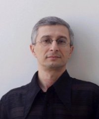

Беньямин Юсупов, композиторБеньямин Яковлевич Юсупов (22 ноября 1962, Душанбе) – израильский композитор, пианист и дирижёр, выходец из Таджикистана. Обладатель премии Союза композиторов СССР (1989), Clone премии (1992), премии Sherover (1993), премии премьер-министра Израиля (1999 и 2008), премии ACUM (2002 и 2004) и премии Ландау исполнительских искусств (2007).
Все его музыкальные сочинения опубликованы издательством Sikorski Musikverlag (Hamburg). Беньямин Юсупов: "Один из самых принципиальных вопросов в моей работе
и цель моего музыкального творчества - дать слушателям сильные и
незабываемые эмоции, ощущение чуда, которое произошло однажды в жизни." Беньямин
Юсупов: "Композитор – это, прежде всего, высокоорганизованный человек,
который в звуках выражает настроения, мысли, чувства людей своего
времени." Беньямин Юсупов: "Мне всегда надо было очень всерьез
доказывать, что я лучше. Что я имею право на свой успех. Само по себе
это не приходило. Удача всегда, на каждом шагу должна была быть
завоевана. И там, в стране, где я родился, и здесь, куда приехал по
очень глубокому убеждению. Я – еврей, и это не только факт моей
биографии, это и моя вера, и мой образ жизни, это – моя судьба." Беньямин
Юсупов: "Не надо выдумывать пятое колесо. Я смотрю внутрь себя, я
вглядываюсь в человеческую историю. Дар, божественный огонь – это всегда
оригинально. Настоящий художник – это всегда неповторимо. И к этому
хотят приобщиться очень многие люди, это привлекает сердца. Бог,
природа, вечность – эти субстанции соприкасаются." Беньямин
Юсупов: "Присутствие Бога – путеводная нить. Я строю свое здание, свою
музыку на серьезном фундаменте: здесь и русская литература, поэзия,
философия, и западная культура, и культура еврейского галута, а с ней
наша боль, и наша гордость...Каждый серьезный музыкант должен иметь
корни. Корни – это суть, и моя тема в музыке, и дань уважения, и мой
еврейский ген, который уже никакими силами не извлечь из меня. Я часто
езжу в Иерусалим. Подышать, помолиться. Мне никогда не приходило в
голову спросить, а зачем мне эта земля." Беньямин Юсупов: "Люблю писать от руки. С инструментом, с карандашом с бумагой. Чувствую живой звук."
Беньямин Юсупов: "Статистика моя личная такова: на 50-60 исполнений за границей приходится 1 исполнение в Израиле." Беньямин
Юсупов: "Особое душевное состояние - мне оно необходимо. Сначала идет
обдумывание. Это самая болезненная стадия. Нужна точка,
неповторимость первого шага – от этого можно оттолкнуться. Точка ищу
внутри себя. Без этой точки, без этого первого толчка не начинаю ничего
писать. Если приходит прозрение – пишу дальше. Для его появления иногда
требуется день, иногда –год. Отделка, техническая работа - это уже не
так трудно. Я для этого родился – и так и живу. Без музыки у меня не
получится быть собой. А если не быть собой – зачем все это вообще?" Беньямин
Юсупов: "Израиль – особое место. Здесь все мировые художественные идеи
находят свое отражение. Все они – здесь, в зерне, в миниатюре. Общество
– как яркая мозаика. Люди разных культур, психологий, привычек,
традиций учатся жить вместе. Жить – с духовностью. Это очень ценно,
ради этого можно многое пройти и вытерпеть. Я хочу видеть страну
счастливой. И писать для этой страны свою музыку!" Беньямин Юсупов: "...надо быть к себе
требовательнее, не надо писать то, что уйдет сразу с тишиной после
последней ноты первого же исполнения. Все выше надо поднимать планку
качества. Мои сочинения звучат десятки раз - это счастье для
композитора." Беньямин Юсупов: "Я работаю всегда - за кофе, в
дороге, за обедом, во сне… Между работой и неработой нет никакой
границы. Знаете, есть такое понятие - КПД. Так этот «коэффициент
полезного действия» очень сложно вычисляется: труд бесконечен, а объем
созданного весьма ограничен. В молодости я немного завидовал авторам
легкой музыки, попсовикам. Там сочинил человек песенку - нехитрую,
незатейливую - и его все знают, спрашивают, что он думает об искусстве, о
тенденциях в музыке. А тут пишешь - и, кроме сотни знатоков, тебя мало
кто заметит. Со временем я от этого недуга излечился: пишу свое, что мне
дано небом, и считаю
себя вполне благополучным." Беньямин
Юсупов: "В Европе есть такое почти официальное деление: до 35 лет -
молодой композитор, так его и воспринимают, c 35 до 60 - зрелый. За
время зрелости можно еще много сделать. Вроде бы ничего принципиально не
изменилось - но я сильнее ощущаю ответственность. И меньше пишу." Беньямин
Юсупов: "К сожалению, отношения среди коллег в нашей сфере определяются
словом «конкуренция». Да и само мое дело - сочинение музыки - есть дело
одиночек, совсем неколлективное дело... Друзей у меня немного, моя
среда, фон моей жизни - семья, родные." Беньямин Юсупов: "Я бы
хотел записать свою музыку так, как она звучит во мне, в моей голове.
Потому что исполнение на концертах - с расслабленными, не очень
подготовленными из-за нехватки времени оркестрами - редко бывает похоже
на то, что я слышу внутри себя, на то, как я это задумал. В результате в
зале во время концерта происходит всё на не сто процентов - и это
больно. Хотел бы записать такой вариант, который на все сто. Вот такая
мечта. Чтобы оркестр не сражался с текстом, не карабкался через горы
технических трудностей. Я такое слышал: наш филармонический играл
Четвертую симфонию Чайковского, музыка была так выучена и осмыслена, что
жила где-то в облаках, музыканты знали партии наизусть - и думали
только о творчестве, все, весь оркестр! Хочу такого - хоть раз! - для
своей музыки..." Корни одарённости Юсупова, выходца из Таджикистана, критики усматривают в истории его предков. Прапрадед композитора Ёсефи Гург известен как выдающийся хафиз Бухары конца ХIХ — начала ХХ веков: он пел при дворе эмира. В основе сочинений Юсупова - музыкальный фольклор бухарских евреев и таджиков, которым он проникся с детства. «Мама филолог. Отец – музыкант». Б. Юсупов рассказывает, что его отец стал музыкантом, когда не очень гладко пошла его жизнь работника прокуратуры, недавнего выпускника юрфака. Молодого юриста послали тогда на Памир. В забытые всеми богами места. Работа была смертельно опасной: справедливость на этой территории мало кого интересовала. «Только засуди меня! Увидишь, что будет!..». Юрист вернулся, спустился с гор – и начал свою музыкальную дорогу. Снова обратился к рубабу, старому другу, инструменту, который был ему хорошо знаком. Один из братьев – скрипач (ныне в «Камерат Йерушалаим»). Другой окончил музыкальную школу для одарённых. Сам Беньямин с 7 лет занимается композицией, становясь новым звеном музыкальной династии. Позже он закончил душанбинское музыкальное училище как пианист. Там же брал первые уроки композиции у таджикского композитора Азама Салиева.
С 1981 по 1990 годы Б. Юсупов учился в Московской консерватории им П.И. Чайковского по классу композиции у Р. Леденёва и Ю. Фортунатова, по классу теории музыки у Ю. Холопова, по классу симфонического дирижирования у Д. Китаенко. С 1987 года Б. Юсупов - дирижёр Филармонического Оркестра в г. Душанбе. Под его руководством оркестр совершал многочисленные гастроли по Советскому Союзу. В программы были включены произведения из всех музыкальных жанров, особенно много играли Бетховена, Чайковского, Брамса, Малера, Рахманинова, Шостаковича и Прокофьева. Он много гастролировал в СССР и как приглашённый дирижёр, и дирижировал такими именитыми коллективами, как Оркестр Московского Радио, филармонические оркестры городов Горького, Алматы и Саратова.
В 1990 году Б. Юсупов с семьёй эмигрировал в Израиль и начал трудовую деятельность в качестве...ночного сторожа. Его жена – альтистка, выпускница Московской консерватории, ученица знаменитого солиста, педагога и композитора Федора Серафимовича Дружинина – нашла работу в «олимовском» оркестре. Потом работала в Израильском камерном. Музыкальные академии страны «не увидели» юсуповский талант, как-то не «ощутили» его. Никуда не приглашали, ничего не предлагали. Он не жаловался, не отчаивался. Жил. Видимо, талант нуждается и в таких затишьях. Если бы еще это не отражалось на нервах и на душевном строе...Если бы семья была обеспечена... Тяжёлой была ломка времён, связанная с переездом в Израиль. Многие здесь расстались с любимым делом. Композитор Б. Юсупов в раздумье. Неожиданный конкурс на лучшее произведение, посвящённое открытию Концертного зала на озере Кинерет. Среди 6-х композиторов – участников конкурса – Б. Юсупов. Композитор приступает к сочинению симфонической поэмы «Габриэль». Это его первое сочинение в стране отцов. Спустя два года. Отстроен Концертный зал. Проводится исполнение конкурсных произведений симфоническим оркестром Иерусалимской Академии. Дирижёр Менди Родан. Решением публики и жюри симфоническая поэма «Габриэль» признана лучшим произведением. Автор Б. Юсупов становится лауреатом конкурса. Первое сочинение на Святой Земле и такой успех. Это явление превращается в границу во времени, в гребень предыдущей волны и начало нового периода творчества.
Солнце пришло с запада. Так – выспренно, но вполне справедливо можно определить поворот в жизни Юсупова. Его Флейтовый концерт сыграл и записал солист из Швейцарии. «Не вышло сыграть в Реховоте – сыграли в Цюрихе?» - «Да, так уж получилось». А потом появились другие очень большие, заинтересованные, чуткие мастера – Максим Венгеров, Миша Майский. Юсупова «открыли» для мира. Оркестры – не только мировые, но даже и израильские - начали исполнять его произведения.
Кандидатскую диссертацию защитил в университете Бар-Илана в Израиле в 2001 году. В Израиле он постоянно сотрудничает с основными израильскими оркестрами - Израильским Филармоническим, Иерусалимским симфоническим, симфоническим города Хайфа, Израильским Камерным оркестром и с солистами в Тель-Авиве. Прошли европейские дебюты его как дирижёра - с Исландским симфоническим оркестром иAmsterdam Sinfonietta в престижном Concertgebouw Hall. В ближайшее время он выступит в качестве дирижёра с London Symphony Orchestra, Lucerne Symphony Orchestra, Flemish Radio Orchestra, Hradec Kralove Philharmonic и т.д.
Его
сотрудничество со скрипачом Максимом Венгеровым , для которого был написан
Виола - Танго - Рок концерт (Viola-Tango-Rock Concerto) , получило восторженный прием во всех уголках
земного шара. Существует одночасовой фильм СТLiving the DreamТТ об этом Концерте, продюсер Ken Howard. Этот фильм показывают сейчас во всём мире.
В
ближайшее время Концерт будет исполняться на Дальнем Востоке, в США и
Европе. Был подписан контракт с EMI Classics для производства
компакт-дисков и DVD с Лондонским симфоническим оркестром и
Беньямином Юсуповым в качестве дирижера .
Бенджамин Юсупов также играл с Максимом Венгеровым как его пианист-аккомпаниатор в таких фестивалях , как Belgrade Bemus , Bratislava , Brussels, Limerick, Wiesbaden, Sent Emillion, Paganiniana in Genova.
Концерт для виолончели написан Б. Юсуповым для Миши Майского на его 60 -летие, это был
совместный заказ с Lucerne Symphony Orchestra, Israel Philharmonic Orchestra и London Philharmonic Orchestra.
Произведения Б. Юсупова исполнялись на многочисленных фестивалях в России, на Internationalen Komponistenfestival Rostrum в Париже (1990), на Almeida Festival в Лондоне (1994), на der Zagreber Biennale в Загребе (2001), на den Ludwigsburger Schlossfestspielen в Людвигсбурге (2004) и на фестивалях в Израиле.
Большие композиции Б. Юсупова были исполнены Юрием Темиркановым и Lucerne Symphony Orchestra, Mariss Jansons и Royal Concertgebouw Orchestra, Владимиром Юровским и London Philharmonic, Казуши Оно и Israel Philharmonic, Peter Oundjian и Toronto Symphony, Эйдзи Оно и NDR Radiophilharmonie.
Б. Юсупов не просто творческий человек, но ещё и философ . Его цель - не только писать музыку , он хотел бы создать свой собственный язык в качестве проводника всех стилей от классики до рок-музыки, язык, глубоко интегрированный во все культуры и этнические группы - для достижения ядра знаний вселенского бытия. В своих композициях он использует как западные, так и восточные музыкальные традиции, в том числе использует музыкальные источники из различных этнических общин. Широта его интересов распространяется на разнообразные музыкальные культуры, живущие на большой площади, которая охватывает Восточную Европу на севере, Эфиопию на юге , Центральную Азию на Востоке, Южную Америку на Западе. В своём творчестве Юсупов разработал язык, который дает начало своему собственному, уникальному музыкальному миру . Его язык сочетает музыкальные традиции различных этнических групп, образцы этих традиций с достижениями современной западной музыки. Юсупов также считает, что тембр и тональность являются важными структурными элементами. Его композиции включают в себя как прямое использование экзотических инструментов, так и создание иллюзий этнических звуков средствами инструментов симфонического оркестра .
Б. Юсупов выполнил работы для: the New World Symphony, the Zurich Chamber Orchestra, the Israel Chamber Orchestra, Dresdner Sinfoniker, Lisbon Symphony, Brandenburger Symphoniker, Orchestra Teatro Communale di Bologna, Anhaltische Philharmonie, NDR Radiophilharmonie, Belgrade Philharmonic, Bogota Philharmonic and Israel Philharmonic Orchestra, Focus Festival, Julliard Theater (2005), Juventus Festival, France (2005), Menton Festival (2005), Zagreb Biennale (2001), Ludwigsburger Schlossfestspielle (2004), Almeida Festival, London (1994), Paris Rostrum (1990)и большого количества фестивалей в Израиле.
Живёт в Кфар-Сабе
Оркестровые сочинения
FALAK (1988), поэма для симфонического оркестра
GABRIEL (1991), поэма для симфонического оркестра
SYMPHONY No. 1 (revised version) (1992)
NOSTALGIA (1992) для струнного оркестра
ALEPH (1995) для симфонического оркестра
INIQUITIES (1998) для 16 исполнителей, сантура и дудука, по прочтению 130-го псалма
GO TANGO (2003) для оркестра
POSTLUDIUM (2003) для оркестра
Концерты
SINFONIA CONCERTANTE (1989-1990/1993) для фортепиано и оркестра
TANOVOR (1994) для флейты и камерного оркестра
NOLA (1994) концерт для различных флейт и струнного оркестра
CONCERTO FOR VIOLIN AND ORCHESTRA (1998), посвящается Максиму Венгерову
DASHT (1999) Концерт для тромбона, этнических инструментов и камерного ансамбля
MAXIMUM (2003) для скрипки, альта, флейты, арфы и оркестра. Посвящается Максиму Венгерову
CONCERTO FOR VIOLA AND ORCHESTRA (2003), посвящается Максиму Венгерову
CONCERTO INTIMO (2005) для фортепиано и оркестра
CONCERTO FOR VIOLONCELLO AND ORCHESTRA (2006) посвящается Мише Майскому
CON MOTO (2007) для маримбы (или фортепиано) и струнного оркестра
CONCERTO FOR TWO CLARINETS AND ORCHESTRA (2010)
Вокальные сочинения
FEELINGS OF CREATION (1995) Кантата для чтеца, смешанного хора, ударных, альта и фортепиано, на стихи Галит Гилад и Омара Хайяма
SIX TANKA (1998) для меццо-сопрано, скрипки (или альта) и фортепиано, на стихи старых японских поэтов, посвящается Чечилии Бартоли и Максиму Венгерову
Инструментальные камерные сочинения
SADOI KUCHSOR (MOUNTAIN SOUNDS) (1985) для квинтета духовых
STRING QUARTET (1986)
SONATA FOR VIOLONCELLO AND PIANO (1988)
MELANCHOLY (1984/1995) для фортепиано
QUINTET FOR MARIMBA (PIANO), TWO VIOLINS, VIOLA AND VIOLONCELLO (1996)
METAPHOR (1996) для арфы (или фортепиано)
JONONA (1996) для флейты, уд'а, контрабаса и ударных
BUT IN VAIN (1997) для флейты, альта и арфы
WHAT I WISHED FOR (1997) для струнного квартета
SEGOH (1997) для флейты, уд'а и ударных
SONATA FOR TWO PIANOS (1983/1998)
PIANO TRIO (2000)
DIRLO BUBIN (2000) для флейты, уд'а, контрабаса и ударных
CROSSROADS No. I (2003) для флейты, скрипки и кроталез
CROSSROADS No. II (2004) для фортепиано
CROSSROADS No. III (2006) для гитары
HAQQONI - CROSSROADS No. IV (2007) для кларнета, скрипки, виолончели, фортепиано и магнитофонной ленты
MUSICA MUNDI (2008) для струнного квартета
CROSSROADS No. V (2008) для струнного секстета
Интервью
|